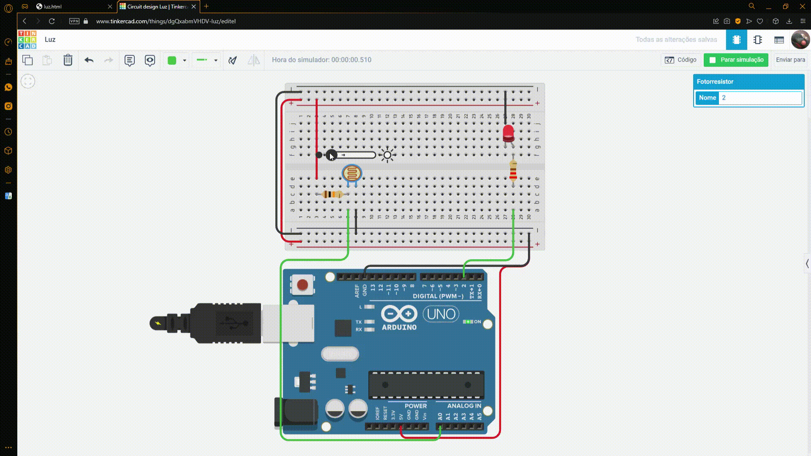

luz automática
Esse projeto foi feito no site Tinkercad para a matéria de Sistemas Ciberfisicos. O objetivo era fazer uma implementação para uma smartcity. Eu e meu grupo
decidimos fazer um sistema de luzes automáticas, que contém um sensor de luminosidade, quando há baixa luminosidade as luzes acendem (a luz está sendo representada com um led).
